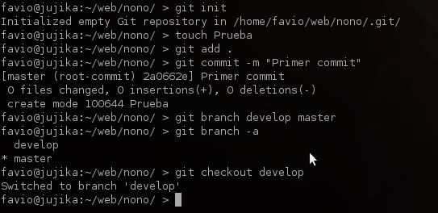
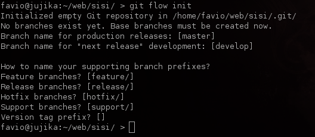
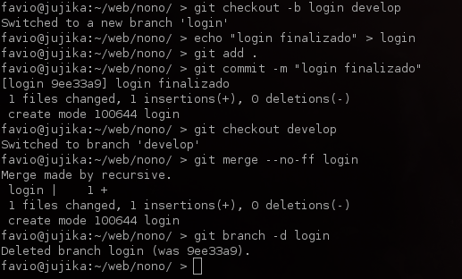
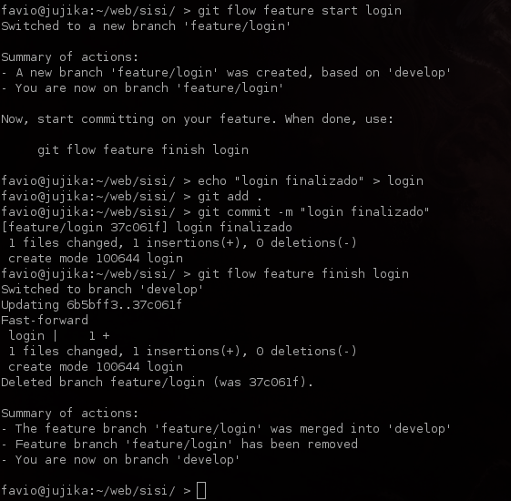
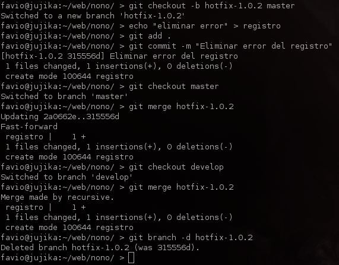
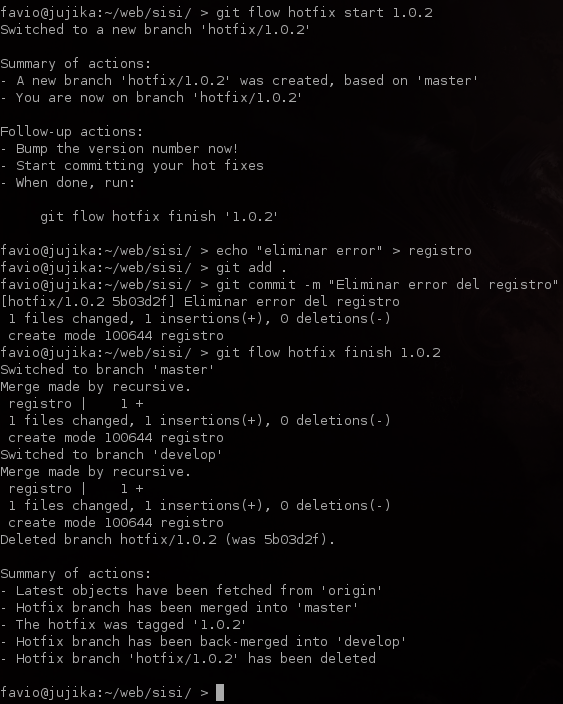

Usando gitflow y Capistrano en 5 minutos
Presentacion disponible en github:
$ git clone git@github.com:favrik/gitflowcap.git
$ cd gitflowcap
$ git submodule init
$ git submodule update
http://nvie.com/posts/a-successful-git-branching-model/
A grandes rasgos:
https://github.com/nvie/gitflow facil de instalar en Mac/Linux, no muy facil en Windows






Capistrano: une herramienta para hacer deploys hecha en Ruby. Para instalar requiere rubygems 1.3.x
$ gem sources -a http://gems.github.com/
$ gem install capistrano
Una vez instalado, se puede ejecutar "capify ." en el directorio root de la app, o simplemente usar una receta como la que voy a linkear ahorita
https://github.com/favrik/favrik.com/blob/master/Capfile
Como usar?
$ cap ambiente deploy:setup
$ cap ambiente deploy
$ cap ambiente deploy:rollback
Donde ambiente es "desarrollo", "pruebas", "produccion", etc.
Referencias:
- Favio Manriquez Leon / favrik.com / favio@favrik.com